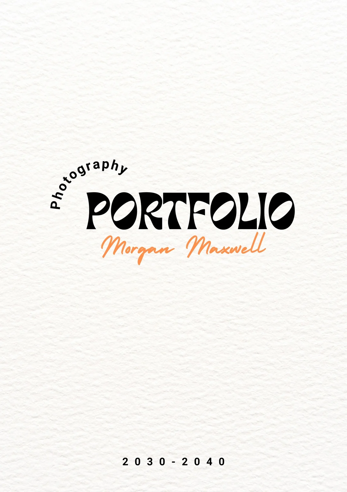

Projects & Hands on Experiences
Projects
Portfolio Website
A portfolio project in React created by me typically showcases my proficiency in web development using the React framework. It demonstrates my skills in front-end design, state management, and possibly integration with backend services or APIs. Your project might include components like a homepage, project gallery, contact form, and possibly interactive features such as animations or dynamic content loading. It serves as a comprehensive display of my abilities in building responsive, user-friendly web applications using modern web technologies
Tourism Website

Tourism website is a beautifully designed tourism website developed by me using HTML and CSS. This website serves as a comprehensive guide for tourists, offering detailed information about various attractions, local culture, travel tips, and accommodation options in Tourism. The project aims to provide a visually appealing and user-friendly platform for visitors to explore and plan their trips.
Hands on Experience
- Undergone 15 days Internship at KRISHTEC Technologies at Coimbatore on Embedded Systems And IOT Domain
- Undergone 2 days workshop on Arduino boards by Enthu Technologies conducted at Sri Krishna College of Technology
- Attended 3 days workshop on Web development conducted by LASAKEDU Technologies